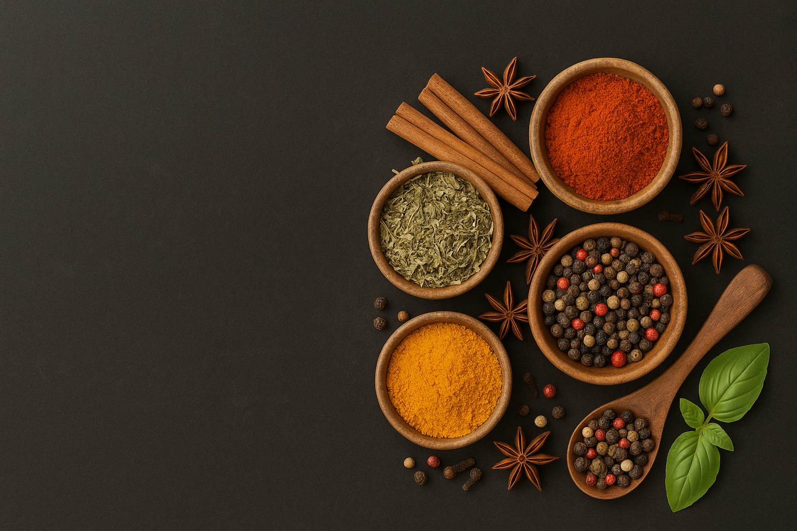

NASILSIL
NASILSIL
Poznaj Smaki Turcji
Witaj w NasilSil – smakuje jak w Turcji!
Jesteśmy nową marką, która powstała z pasji do dobrego jedzenia i miłości do aromatycznych przypraw. W NasilSil wierzymy, że prawdziwy smak zaczyna się od jakości – dlatego sprowadzamy nasze przyprawy bezpośrednio z serca Turcji, skąd pochodzą najintensywniejsze i najbardziej naturalne mieszanki.
Współpracujemy wyłącznie ze sprawdzonymi dostawcami, którzy dbają o tradycję i świeżość zbiorów. Nasze produkty nie mają nic wspólnego z masową produkcją – każda paczka to zaproszenie do świata orientu, do kuchni, która rozgrzewa zmysły i budzi wspomnienia.
Dopiero zaczynamy, ale robimy to z sercem i determinacją. Chcemy, abyś poczuł różnicę już od pierwszego zamówienia. Nie jesteśmy kolejnym sklepem z przyprawami – jesteśmy Twoim nowym źródłem inspiracji kulinarnych.
Rozgość się, poszukaj ulubionych smaków, a jeśli masz pytania – pisz śmiało. Jesteśmy tu dla Ciebie!
NasilSil – Smak, który przychodzi z daleka, by zostać na dłużej.
Metody płatności